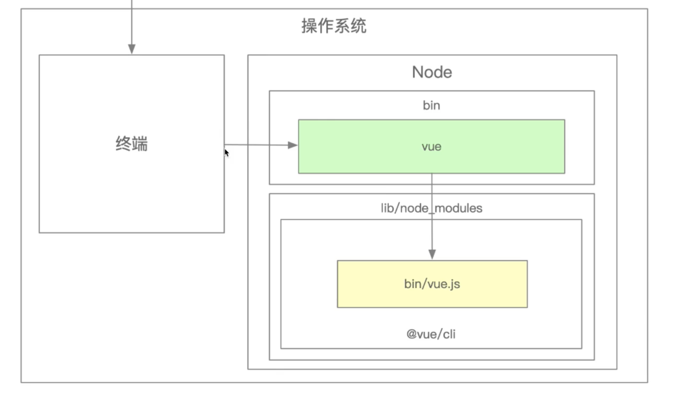
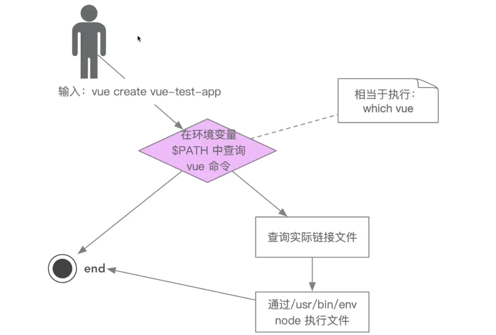
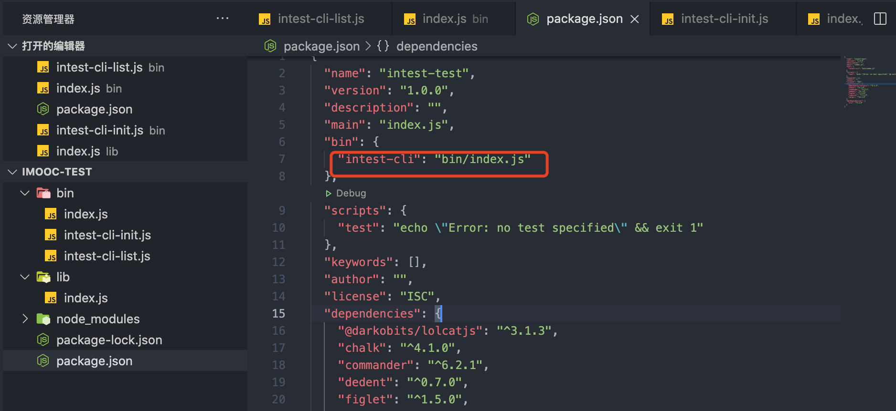
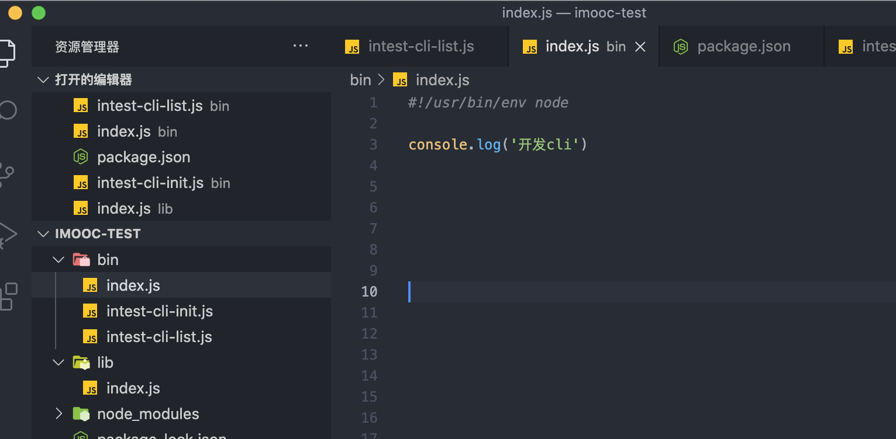

脚手架架构设计和搭建
脚手架是什么
脚手架的本质是一个操作系统的客户端，他通过命令行执行，比如：
vue create project
上面的命令由3部分组成：
- 主命令：vue
- command：create
- command的params：project
他表示创建了一个vue的项目，项目名称为project，以上是一个比较简单的脚手架命令，不过实际应用场景会更加复杂：
vue create project --force
这里--force叫做option用来辅助脚手架确认在特定的场合下用户的选择，也可以理解成配置。
这里我们就会好奇这些指令是怎么来的？ 打开终端输入：vue -h
Usage: vue <command> [options]
Options:
-V, --version output the version number
-h, --help output usage information
Commands:
create [options] <app-name> create a new project powered by vue-cli-service
add [options] <plugin> [pluginOptions] install a plugin and invoke its generator in an already created project
invoke [options] <plugin> [pluginOptions] invoke the generator of a plugin in an already created project
inspect [options] [paths...] inspect the webpack config in a project with vue-cli-service
serve [options] [entry] serve a .js or .vue file in development mode with zero config
build [options] [entry] build a .js or .vue file in production mode with zero config
ui [options] start and open the vue-cli ui
init [options] <template> <app-name> generate a project from a remote template (legacy API, requires @vue/cli-init)
config [options] [value] inspect and modify the config
outdated [options] (experimental) check for outdated vue cli service / plugins
upgrade [options] [plugin-name] (experimental) upgrade vue cli service / plugins
migrate [options] [plugin-name] (experimental) run migrator for an already-installed cli plugin
info print debugging information about your environment
Run vue <command> --help for detailed usage of given command.
通过面板我们可以看到Commands下有create，add等等一系列的命令。如果我们需要查看create的具体配置如下：
Usage: create [options] <app-name>
create a new project powered by vue-cli-service
Options:
-p, --preset <presetName> Skip prompts and use saved or remote preset
-d, --default Skip prompts and use default preset
-i, --inlinePreset <json> Skip prompts and use inline JSON string as preset
-m, --packageManager <command> Use specified npm client when installing dependencies
-r, --registry <url> Use specified npm registry when installing dependencies (only for npm)
-g, --git [message] Force git initialization with initial commit message
-n, --no-git Skip git initialization
-f, --force Overwrite target directory if it exists
--merge Merge target directory if it exists
-c, --clone Use git clone when fetching remote preset
-x, --proxy <proxyUrl> Use specified proxy when creating project
-b, --bare Scaffold project without beginner instructions
--skipGetStarted Skip displaying "Get started" instructions
-h, --help output usage information
那么我们输入这些指令之后到底发生了什么？
脚手架实现原理
当用户输入在终端vue create project时： 
脚手架的执行原理如下：
- 在终端输入
vue create project - 终端解析出
vue命令 - 终端在环境变量中找到
vue命令 - 终端根据
vue命令链接到实际到文件vue.js - 终端利用
node执行vue.js - vue.js解析
command/options - vue执行command
- 执行完毕，退出终端
脚手架原理进阶

开发一个脚手架
为什么要开发一个脚手架？
- 1、减少时间，不必从零开始搭建初始项目，提高开发效率。
- 2、便于多人协作。
- 3、项目更新同步方便，只需要更新代码库中项目模板，即可下载最新的项目。
脚手架的开发流程
脚手架开发
创建npm项目
npm init -y
创建脚手架文件入口，最上方添加：
#! /usr/bin/env node
配置package.json,添加bin属性，编写脚手架代码，发布npm


然后执行npm link软连接到node下,这个时候就可以直接使用在bin下定义的intest-cli了。
打开终端输入： intest-cli
打印： 开发cli
脚手架安装
以上是我们在本地开发中使用，如果项目发布到npm上了，那么就在终端输入npm i intest-cli -g进行全局安装，就可以进行使用了。
脚手架开发难点
- 分包：将复杂到系统拆分为若干个模块
- 命令注册：
vue create vue add vue invoke - 参数解析：
vue command [options] <params>- options全称：--version,--help
- options简写：-V,-h
- 带params的options：--path/ Users/linlei/Desktop/vue-test
- 帮助文档：
- global help
- Usage
- Options
- Commands 还有很多，比如：
- 比如命令行交互
- 日志打印
- 命令行文字变色
- 网络通信，http/websocket
- 文件处理 ...
脚手架本地link标准流程
链接本地脚手架：
cd your-cli-dir
npm link
链接本地库文件：
cd your-lib-dir
npm link
cd your-cli-dir
npm link your-lib
取消链接本地库文件：
cd your-lib-dir
npm unlink
cd your-cli-dir
npm unlink your-lib
理解npm link:
npm link your-lib: 将当前项目中的node_modules下指定的库文件链接到node全局下的库文件npm link: 将当前项目链接到node全局node_modules中作为库文件，并解析bin配置，创建可执行文件
理解npm unlink:
npm unlink将当前项目从node到全局node_modules下删除npm unlink your-lib: 将当前项目中的库文件依赖删除
lerna
lerna是一个优化给予git+npm的多package项目的管理工具
优势
- 大幅减少重复操作
- 提升操作的标准化
lerna是架构优化的产物，它揭示了一个架构真理，项目复杂度提升后，就需要对项目进行架构优化，架构优化的主要目标，往往以效能为核心。
如何使用
- 1.脚手架项目初始化
初始化
npm项目-->安装lerna-->learn init初始化项目 - 2.创建
packagelerna create创建package-->lerna add安装依赖-->lerna link链接依赖 - 3.脚手架开发和测试
lerna exec执行shell脚本-->lerna run执行npm命令 -->lerna clean清空依赖 -->lerna bootstrap重装依赖 - 4.脚手架发布上线
lerna versionbump version -->lerna changed查看上版本以来的所有版本 -->lerna diff查看diff-->lerna publish发布
基于lerna创建项目
安装lerna
npm install -g lerna
lerna命令：
lerna create xxx创建一个项目
lerna add axios我们可以看到在packages下的所有子项目都会安装这个依赖
lerna add axios packages/xxx给某个项目安装依赖
lerna exec -- rm -rf node_modules 删除目录下的所有的node_modules文件夹
lerna exec --scope xxx -- rm -rf node_modules 删除指定目录下的文件，xxx代表package.json的name值
lerna bootstrap 重装依赖
lerna run xxx xxx表示scripts脚本命令，所有的项目都会执行
lerna run --scope devname xxx执行指定目录下的脚本，devname表示package.json包名，xxx表示scripts脚本命令
yargs的基本使用
- 1.安装
npm i yargs - 2.在项目中使用
#!/usr/bin/env node
const yargs = require('yargs/yargs')
const { hideBin } = require('yargs/helpers')
const arg = hideBin(process.argv)
const dedent = require('dedent') // 终端信息栏对齐
const cli = yargs(arg)
cli
.usage('Usage: intest-cli [command] <option>') // 使用方式的介绍
.alias('h', 'help') // 别名
.alias('v', 'version')
.wrap(cli.terminalWidth()) // 终端右侧的宽度
.epilogue(dedent`底部信息
111`) // epilogue给底部添加一个信息，dedent，终端左侧栏对齐
.demandCommand(1, 'A command is required. Pass --help to see all available commands and options.') // 最少输入的命令个数
.strict() // 严格模式
.options({ // 对全局的[command]都起作用可以处理多个option
debug: {
type: 'boolean',
describe: 'Bootstrap debug mode',
alias: 'd'
}
})
.option('registry', {// 同options类似，处理单个
describe: '注册',
alias: 'r'
})
.group(['debug'], 'Dev Options') // 对option进行分组
.command('init [name]', 'create a project', (yargs)=> {// 执行命令
yargs.option('name', {
type: 'string',
describe: 'name of a project'
})
},(args)=> {
console.log(args)
})
.command({ // 可以处理多个command以对象对形式处理
command: 'list',
aliases: ['ls', 'li'],
describe: 'list local packages',
builder: (yargs) => {
},
handler: (argv) => {
console.log(argv) // 打印终端输入的指令
}
})
.argv;